Securing An Application¶
Flow provides multiple System categories out of the box, such as AppType, AppTier, and Environment, that are used to quickly group virtual machines. Security policies are applied using these VM groups. Start using these pre-existing categories right away, or add your own categories for custom grouping.
Defining Category Values¶
Prism Central uses categories as metadata to tag VMs to determine how policies will be applied.
In Prism Central, select > Virtual Infrastructure > Categories.
Select the checkbox for AppType and click Actions > Update.
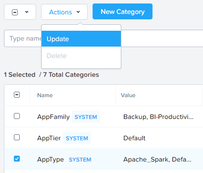Click the icon beside the last value to add an additional Category value.
Specify Initials-TaskMan as the value name.
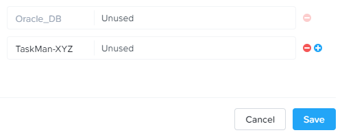Click Save.
Select the checkbox for AppTier and click Actions > Update.
Click the icon beside the last value to add an additional Category value.
Specify Initials-TMWeb as the value name. This category will be applied to the application’s web tier.
Click and specify Initials-TMDB. This category will be applied to the application’s MySQL database.
Click and specify Initials-TMLB. This category will be applied to the application’s HAProxy load balancer.
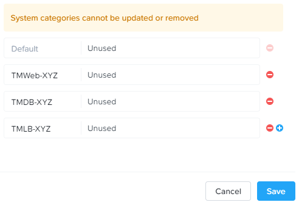Click Save.
Creating a Security Policy¶
Nutanix Flow includes a policy-driven security framework that uses a workload-centric approach instead of a network-centric approach. Therefore, it can scrutinize traffic to and from VMs no matter how their network configurations change and where they reside in the data center. The workload-centric, network-agnostic approach also enables the virtualization team to implement these security policies without having to rely on network security teams.
Security policies are applied to categories (a logical grouping of VMs) and not to the VMs themselves. Therefore, it does not matter how many VMs are started up in a given category. Traffic associated with the VMs in a category is secured without administrative intervention, at any scale.
While you wait for the Task Manager application to be deployed from the Calm blueprint, create the security policies that will protect the application.
In Prism Central, select > Policies > Security Policies.
Click Create Security Policy > Secure Applications (App Policy) > Create.
Fill out the following fields:
- Name - Initials-AppTaskMan
- Purpose - Restrict unnecessary access to Task Manager
- Secure this app - AppType: Initials-TaskMan
- Do NOT select Filter the app type by category.
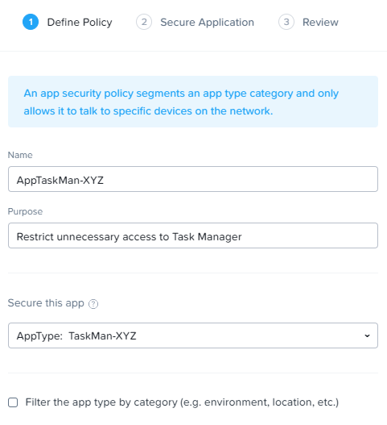Click Next.
If prompted, click OK, Got it! on the tutorial diagram of the Create App Security Policy wizard.
To allow for more granular configuration of the security policy, click Set rules on App Tiers rather than applying the same rules to all components of the application.
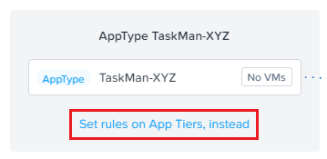Click + Add Tier.
Select AppTier:Initials-TMLB from the drop down.
Repeat Steps 7-8 for AppTier:Initials-TMWeb and AppTier:Initials-TMDB.
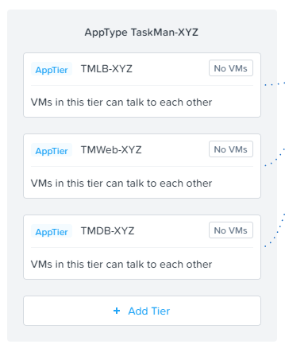Next you will define the Inbound rules, which control which sources you will allow to communicate with your application. You can allow all inbound traffic, or define whitelisted sources. By default, the security policy is set to deny all incoming traffic.
In this scenario we want to allow inbound TCP traffic on port 80 from all clients on the production network.
Under Inbound, click + Add Source.
Start typing Environment:Production and click Add.
Note
Sources can also be specified by IP or subnet, but Categories allow for greater flexibility as this data can follow a VM regardless of changes to its network location.
To create an inbound rule, select the + icon that appears to the left of AppTier:Initials-TMLB.
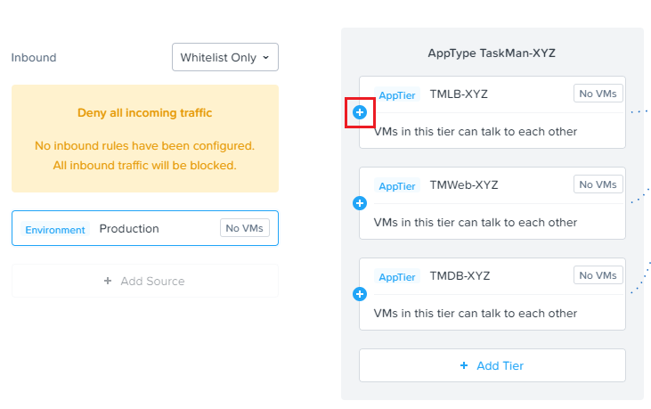Fill out the following fields:
- Protocol - TCP
- Ports - 80
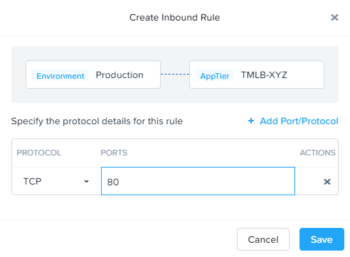Note
Multiple protocols and ports can be added to a single rule.
Click Save.
Calm could also require access to the VMs for workflows including scaling out, scaling in, or upgrades. Calm communicates with these VMs via SSH, using TCP port 22.
Under Inbound, click + Add Source.
Fill out the following fields:
- Add source by: - Select Subnet/IP
- Specify Your Prism Central IP/32
Note
The /32 denotes a single IP as opposed to a subnet range.
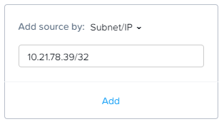Click Add.
Select the + icon that appears to the left of AppTier:Initials-TMLB, specify TCP port 22 and click Save.
Repeat Step 18 for AppTier:Initials-TMWeb and AppTier:Initials-TMDB to allow Calm to communicate with the web tier and database VMs.
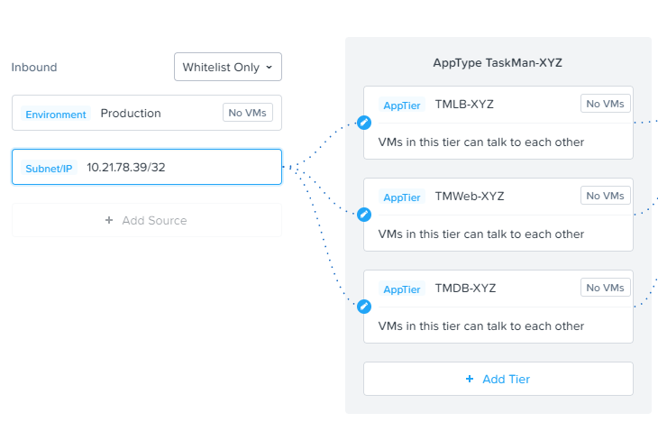By default, the security policy allows the application to send all outbound traffic to any destination. The only outbound communication required for your application is for the database VM to be able to communicate with your DNS server.
Under Outbound, select Whitelist Only from the drop down menu, and click + Add Destination.
Fill out the following fields:
- Add source by: - Select Subnet/IP
- Specify Your Domain Controller IP/32
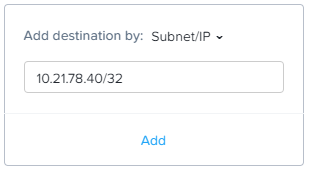Click Add.
Select the + icon that appears to the right of AppTier:Initials-TMDB, specify UDP port 53 and click Save to allow DNS traffic.
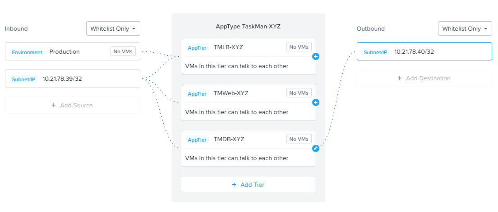Each tier of the application communicates with other tiers and the policy must allow this traffic. Some tiers such as the load balancer and web do not require communication within the same tier.
To define intra-app communication, click Set Rules within App.
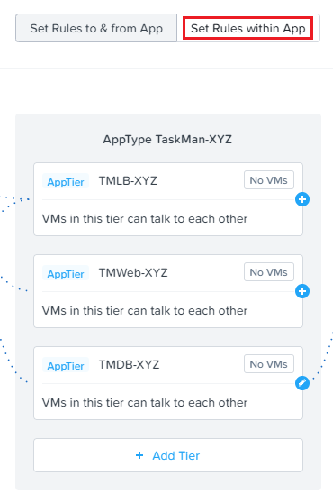Click AppTier:Initials-TMLB and select No to prevent communication between VMs in this tier. There is only a single load balancer VM within the tier.
While AppTier:Initials-TMLB is still selected, click the icon to the right of AppTier:Initials-TMWeb to create a tier to tier rule.
Fill out the following fields to allow communication on TCP port 80 between the load balancer and web tiers:
- Protocol - TCP
- Ports - 80
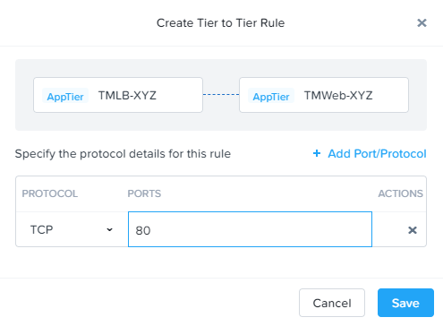Click Save.
Click AppTier:Initials-TMWeb and select No to prevent communication between VMs in this tier. While there are multiple web server VMs, they do not need to communicate with each other.
While AppTier:Initials-TMWeb is still selected, click the icon to the right of AppTier:Initials-TMDB to create another tier to tier rule.
Fill out the following fields to allow communication on TCP port 3306 to allow the database connection between the web servers and the MySQL database:
- Protocol - TCP
- Ports - 3306
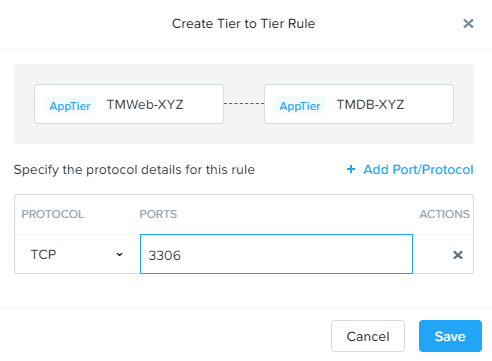Click Save.
Click Next to review the security policy.
Click Save and Monitor to save the policy.
Assigning Category Values¶
Note
By this time, your application blueprint should have finished provisioning. If it has not completed, please wait until it has finished to proceed.
You will now apply the previously created categories to the VMs provisioned from your Task Manager blueprint. Flow categories can be assigned as part of a Calm blueprint, but the purpose of this exercise is to understand category assignment to existing virtual machines in an environment.
In Prism Central, select > Virtual Infrastructure > VMs.
Click Filters and search for Initials- to display your virtual machines.
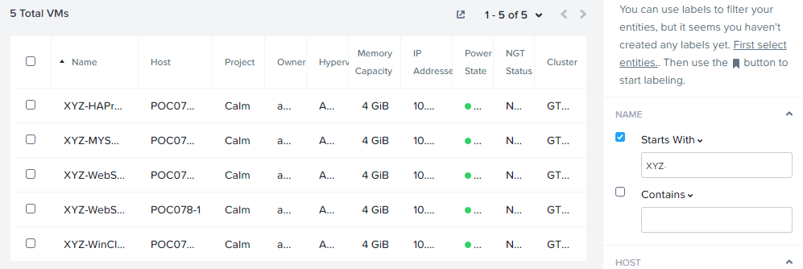Using the checkboxes, select the 4 VMs associated with the application (HAProxy, MYSQL, WebServer-0, WebServer-1) and select Actions > Manage Categories.
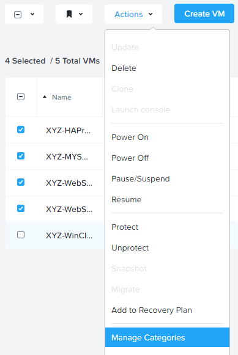Note
You can also use the Label functionality to make searching for this group of VMs faster in the future.
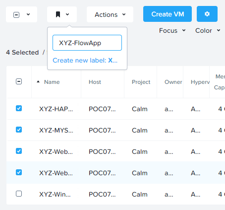Specify AppType:Initials-TaskMan in the search bar and click Save icon to bulk assign the category to all 4 VMs.
Select ONLY the Initials-HAProxy VM, select Actions > Manage Categories, specify the AppTier:Initials-TMLB category and click Save.
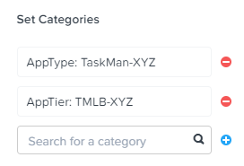Repeat Step 5 to assign AppTier:Initials-TMWeb to your web tier VMs.
Repeat Step 5 to assign AppTier:Initials-TMDB to your MySQL VM.
Finally, repeat Step 5 to assign Environment:Dev to your Windows client VM.
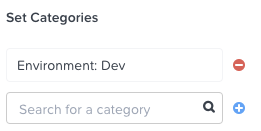
Monitoring and Applying a Security Policy¶
Before applying the Flow policy, you will ensure the Task Manager application is working as expected.
Testing the Application¶
From Prism Central > Virtual Infrastructure > VMs, note the IP address of your Initials-HAPROXY-0… and Initials-MYSQL-0… VMs.
Launch the console for your Initials-WinClient-0 VM.
This VM was provisioned as part of the Task Manager application blueprint.
From the Initials-WinClient-0 console open a browser and access http://HAPROXY-VM-IP/.
Verify that the application loads and that tasks can be added and deleted.
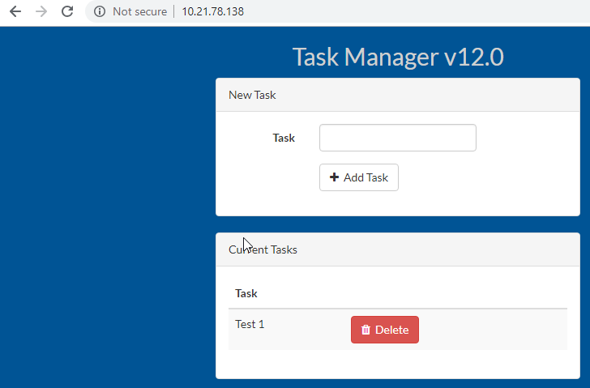Open Command Prompt and run
ping -t MYSQL-VM-IPto verify connectivity between the client and database. Leave the ping running.Open a second Command Prompt and run
ping -t HAPROXY-VM-IPto verify connectivity between the client and load balancer. Leave the ping running.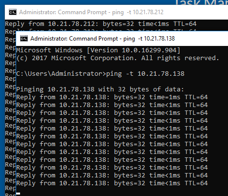
Using Flow Visualization¶
Return to Prism Central and select > Virtual Infrastructure > Policies > Security Policies >Initials-AppTaskMan.
Verify that Environment: Dev appears as an inbound source. The source and line appear in yellow to indicate that traffic has been detected from your client VM.
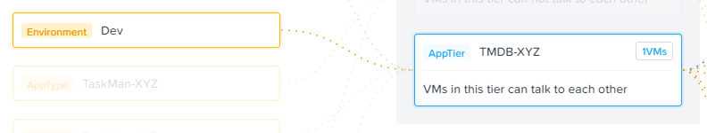Mouse over the line connecting Environment: Dev to AppTier:Initials-TMLB to view the protocol and connection information.
Click the yellow flow line to view a graph of connection attempts over the past 24 hours.
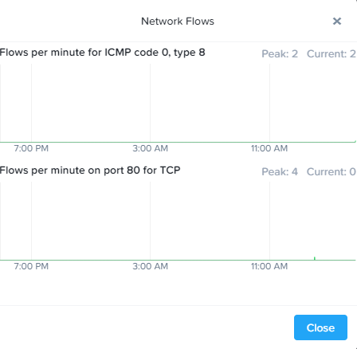Are there any other detected outbound traffic flows? Hover over these connections and determine what ports are in use.
Click Update to edit the policy.
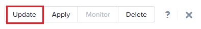Click Next and wait for the detected traffic flows to populate.
Mouse over the Environment: Dev source that connects to AppTier:Initials-TMLB and click the icon that appears.
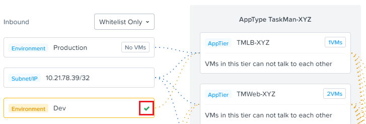Click OK to complete adding the rule.
The Environment: Dev source should now turn blue, indicating that it is part of the policy. Mouse over the flow line and verify that both ICMP (ping traffic) and TCP port 80 appear.
Click Next > Save and Monitor to update the policy.
Applying Flow Policies¶
In order to enforce the policy you have defined, the policy must be applied.
Select Initials-AppTaskMan and click Actions > Apply.
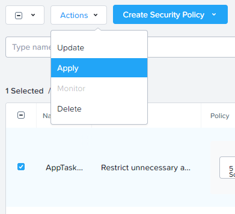Type APPLY in the confirmation dialogue and click OK to begin blocking traffic.
Return to the Initials-WinClient-0 console.
What happens to the continuous ping traffic from the Windows client to the database server? Is this traffic blocked?
Verify that the Windows Client VM can still access the Task Manager application using the web browser and the load balancer IP address.
Can you still enter new tasks that require communication between the web server and database?